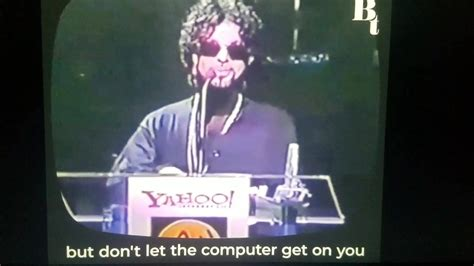

the computer as a tool
_the computer is a tool, though not sacred as traditional tools are
__it isnt sacred as it is infinitely complex and intangible
___as an object its use isnt obvious, subverting what we innately know about the physical world
____this allows it to act unlike most other tools, as Prince once said
_____"its cool to get on the computer..."
_______
